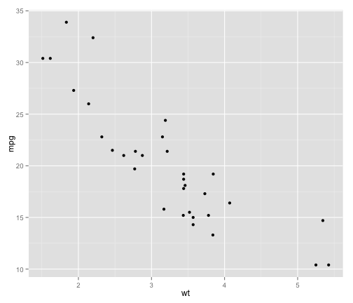

- Edit YAML front matter
- Write using R Markdown
- Use an empty line followed by three dashes to separate slides!
Kevin Middleton
Let us create a simple scatterplot.
require(ggplot2)
qplot(wt, mpg, data = mtcars)

library(xtable)
options(xtable.type = "html")
xtable(head(mtcars))
| mpg | cyl | disp | hp | drat | wt | qsec | vs | am | gear | carb | |
|---|---|---|---|---|---|---|---|---|---|---|---|
| Mazda RX4 | 21.00 | 6.00 | 160.00 | 110.00 | 3.90 | 2.62 | 16.46 | 0.00 | 1.00 | 4.00 | 4.00 |
| Mazda RX4 Wag | 21.00 | 6.00 | 160.00 | 110.00 | 3.90 | 2.88 | 17.02 | 0.00 | 1.00 | 4.00 | 4.00 |
| Datsun 710 | 22.80 | 4.00 | 108.00 | 93.00 | 3.85 | 2.32 | 18.61 | 1.00 | 1.00 | 4.00 | 1.00 |
| Hornet 4 Drive | 21.40 | 6.00 | 258.00 | 110.00 | 3.08 | 3.21 | 19.44 | 1.00 | 0.00 | 3.00 | 1.00 |
| Hornet Sportabout | 18.70 | 8.00 | 360.00 | 175.00 | 3.15 | 3.44 | 17.02 | 0.00 | 0.00 | 3.00 | 2.00 |
| Valiant | 18.10 | 6.00 | 225.00 | 105.00 | 2.76 | 3.46 | 20.22 | 1.00 | 0.00 | 3.00 | 1.00 |